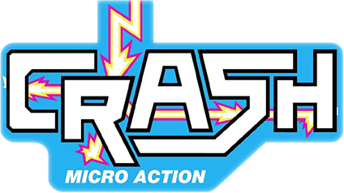
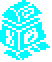

CRASH Smashes
Well over 300 games earned a CRASH Smash during the eight-year run of the most popular Spectrum magazine of the 1980s and early 1990s. Each month, CRASH highlighted a handful of titles they felt deserved this badge of honour, and the impact was huge — a CRASH Smash could send sales soaring. Publishers even printed it proudly on their covers: "A CRASH SMASH."
Here we have every one of those titles, each linking to its corresponding review sourced from CRASH Online.

An Introduction to CRASH
CRASH (Feb 1984 – April 1992) was the youngest and shortest-lived of the three main Sinclair magazines. It occupied a rather different niche from its principal rivals, Sinclair User and Your Spectrum (later Your Sinclair). Whereas SU aimed itself at the "serious" Sinclair user and YS at the techies, CRASH was targeted from the start at the gamers, as its "loud" title suggested.
This was a smart choice. Although the other two magazines had a solid niche following, CRASH's founders recognised from the start that by far the biggest group of Spectrum users were gamers first and foremost. A similar approach was adopted for CRASH's sister magazines, ZZAP!64 (for the Commodore 64) and AMTIX (for the Amstrad CPC), and proved highly successful on all three titles. CRASH had the largest circulation of the three major Sinclair magazines (over 100,000 copies a month at its peak) and was the standard guide for the software distribution trade in deciding which games to stock in the shops. The magazine was, however, the first to succumb to market forces and bit the dust in the summer of 1992; its rivals lasted another year before they too died.
But wait — the story doesn’t end there. In 2017, an enterprising chap named Chris Wilkins launched a Kickstarter to bring CRASH back from the great magazine rack in the sky. Not only did it succeed — he went all-in and bought the rights to the CRASH name. Thanks to Fusion Retro Books, the magazine is still being published to this very day.
They’ve kept the tradition alive too: each issue proudly features cover art by the legendary Oliver Frey, and in the early days of the revival Roger Kean was involved as well. Sadly, both have since passed on, but their influence is still stamped all over every page.
Fusion didn’t stop there either — they’ve also revived ZZAP! and publish a dedicated magazine for the Spectrum Next. Yet another reminder that the Speccy simply refuses to become obsolete. It just keeps respawning.

LOAD "Further Reading"
A Brief History of CRASH — A short introduction and brief history
The Pioneers Roger Kean — The co-founder and first editor of CRASH
Roger Kean Interview — An interview with Roger
Barnaby Page Interview — Interview with the assistant editor (later editor) of CRASH
John Richardson Interview — The artist behind the Jetman cartoon strip
Lloyd Looks Back at 1984 1985 1986 1987 1988— Lloyd looks back at the year's happenings
Unclear Humour — What on God's green Earth was CRASH thinking?
CRASH Reviews — PDF by T.L. Bullock at CRASH Online, covering every CRASH review